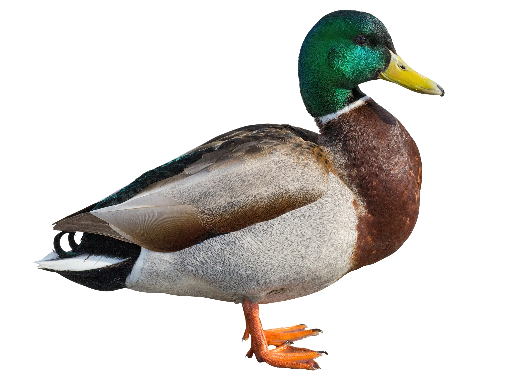
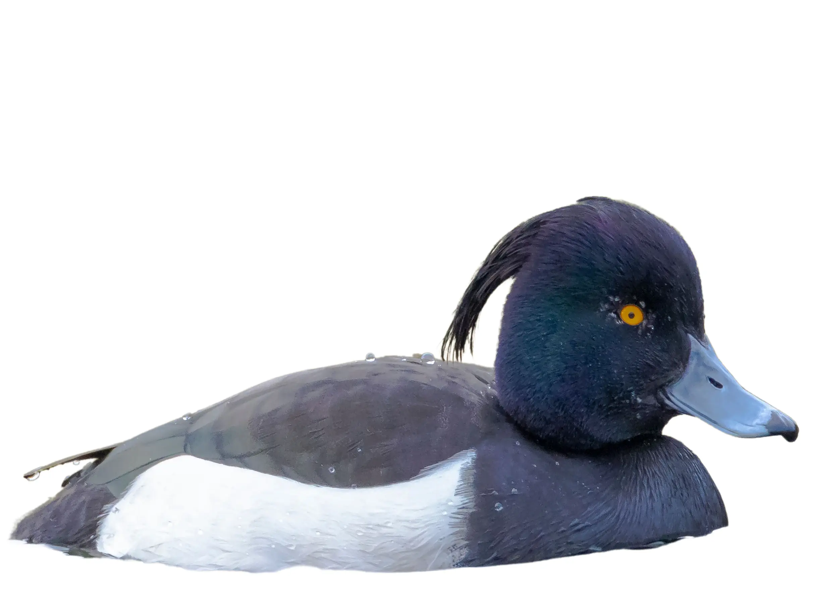
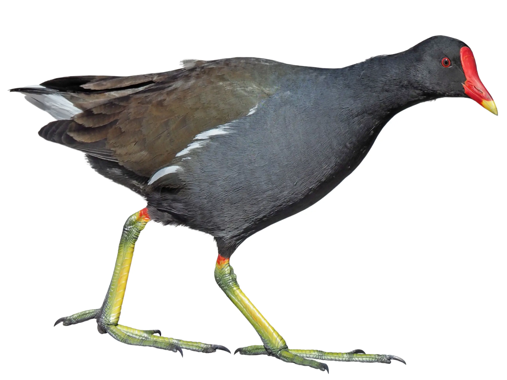
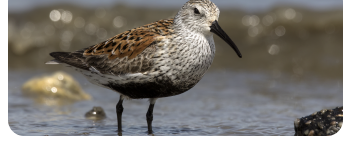

Where are you in your birding journey?
Quests built around you
Birda uses your location to build quests from the birds that are actually near you — so every one is a quest you can finish on your own patch. Turn it on for quests that fit where you bird.

Your first quest is waiting.
Any you already know get a head start — you'll find the rest out there.
Seen any of these recently?
Recognising a bird gives your quest a head start — but only the field counts toward your sightings. Log the rest when you actually see them.
Quest Birds Likely Near You
See allYour quests
Spot the birds, log them, earn feathers. Quests refresh each week.
Spot 3 common garden birds
Suggested birds to find — any Common garden bird counts.
Quest done. Well spotted.
You found 3 garden birds and finished your first quest. Most people see a Robin and call it a day — you kept going.
Likely near you
See all


Your quests
Your feathers
How you earned them
What you can do with feathers

Winter waders — before they leave
Waders feed along wetland edges, mudflats and shorelines. They visit the UK in winter, then head north to breed in spring. Once they go, they're gone until next autumn.